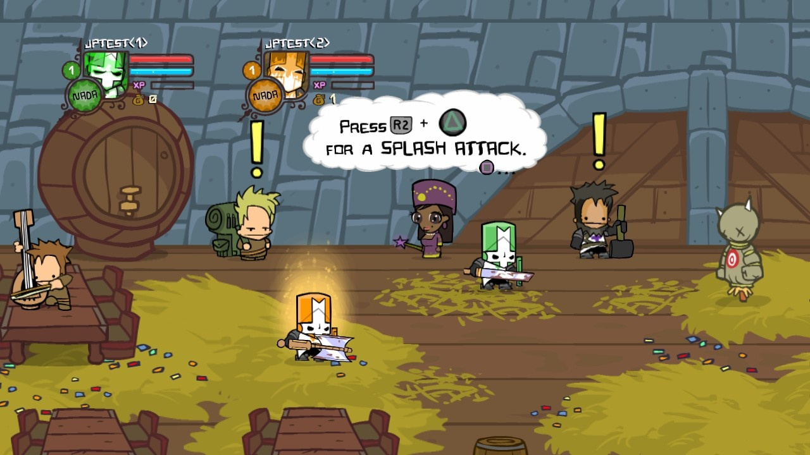
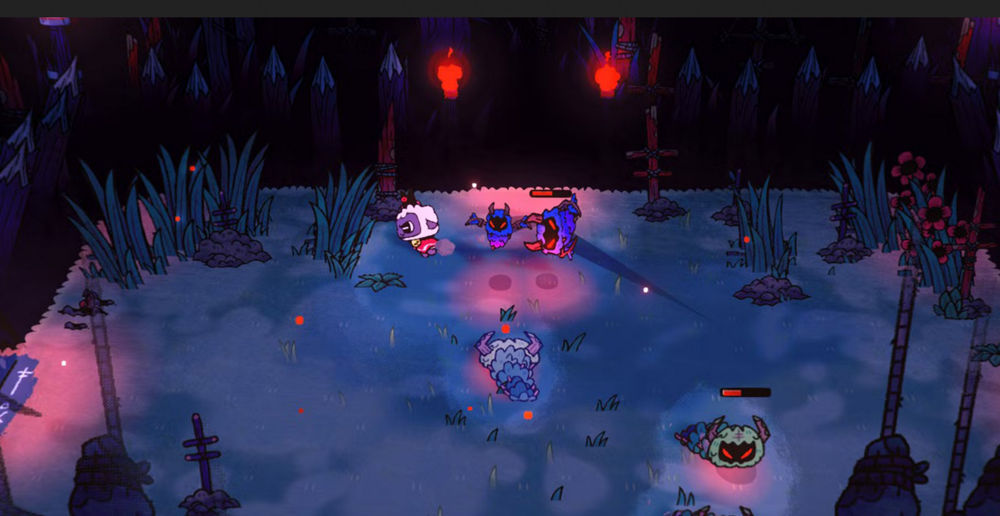

Art Direction
Art Style
The art style is pixel art with the cartoon style of Castle Crashers. The gameplay is isometric so characters and enviroments will have a perspective similar to Cult of the lamb. Everything has to point back to the theme, so even the doors to rooms will be ripped with bulging eyes form all the steroids. Enemies are working out while idling. If it does not relate to either fantasy dungeon crawl or working out, get it out of here.  
Main Concepts
- Ripped, make everything muscle bound
- Weights, have wizards lifting dumbells with magic and three goblins in a row benchpressing together.
- Fantasy, this is a world where magic and the Gym come together dont forget to add a little magic

Main Character
Our hero starts as a skinny boy with big dreams, as we go we can show his progress by adding more muscles. He has his shirt off and is ready to work out, keep in mind that he is there not just to fight but to work out, so have him throw weights and when he uppercuts his arms flex.
Enemies
Enemis are where the humor and theme of the game really shine, enemies are jokes, try to keep things funny. Gym-rats(rats that walk on two legs and are ripped) and wizards who lift with magic and still get buff, enemies that work out their neck so much that there is nothing else left. Every enemy should put a smile on someones face. keep in mind the Main Concepts